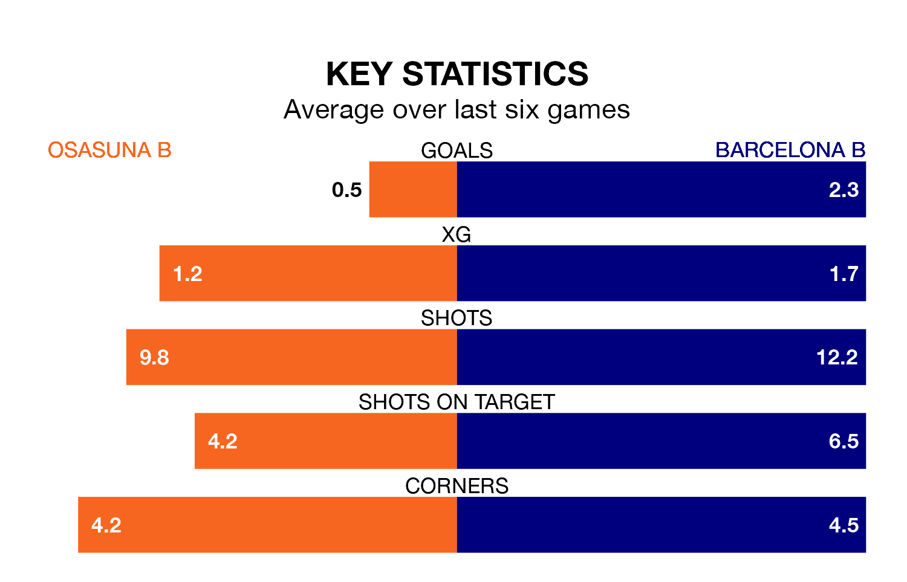

Barcelona B are strong favourites to take all three points despite Osasuna B's home advantage in Sunday's late match at Instalaciones Deportivas de Tajonar.
*Betting Company* are offering odds of 1.95 on Barcelona B sealing the win, with the visitors sitting second in Primera Division RFEF Group 1 table.
Osasuna B, who are 12th in the league and 20 points behind Barcelona B, are priced at 3.5 to win. A draw is set at 3.3.
With 45 goals in 29 games so far this season, Barcelona B are the league's third-highest scorers with 1.6 goals per game. And they are conceding at an average rate, letting in 29 goals at a rate of 1.0 per game.
Osasuna B are also above average scorers, with 1.1 goals per game, compared to a league average of 1.0. They have conceded 1.3 goals per game.
In Pau Victor, the away side have the league's sharpest shooter so far this season. He has notched 12 goals in 21 appearances.
His goal rate of one every 157 minutes is quicker than that of Ander Yoldi Aizagar, the hosts' top scorer with a goal every 237 minutes, and a total of eight goals in 24 games.
Osasuna B are in disappointing form in Primera Division RFEF Group 1, with one win and two draws from their last six games.
With five wins and a draw over that period, Barcelona B's form is much better – they have taken 16 points from 18, compared to Osasuna B's five.
In the last three years, Osasuna B and Barcelona B have played each other on three occasions. Barcelona B won all of them.
Their last meeting was on October 29, when Barcelona B won 2-1 at home.
Osasuna B's last match was on Sunday, a 0-0 draw against Cultural y Deportiva Leonesa.
Barcelona B beat UE Cornellà 1-0 last time out, also on March 24, with Diego Pertejo Canseco on the scoresheet.
Updated: 10:31 (UTC), 31/03/24